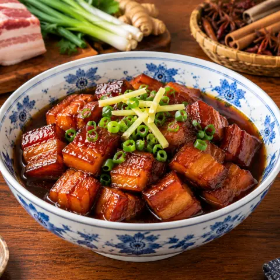

🍖 上海红烧肉
五花肉用焦糖、绍兴酒和酱油烧到红亮软糯。
食材
- 五花肉680 克
- 食用油2 汤匙
- 糖2 汤匙
- 料酒80 毫升
- 酱油2 汤匙
- 老抽1 汤匙
做法
- 五花肉切2厘米块。冷水下锅煮开约1分钟至表面变白，捞出洗净。
- 小火在锅里把油和糖化开。放入肉块，转中火煎到微黄。
- 转小火倒入料酒煮2分钟。加入生抽、老抽和约500毫升水，快没过肉。
- 盖盖炖45–60分钟，每5–10分钟翻动一次，干了就加点水，直到筷子能轻松插入。
- 开盖转大火，翻炒到汤汁收成红亮的酱汁。配米饭。

五花肉用焦糖、绍兴酒和酱油烧到红亮软糯。